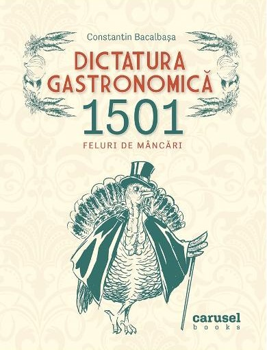

Dictatura gastronomică
Constantin Bacalbașa
Considerată de Păstorel Teodoreanu „un monument gastronomic“, Dictatura Gastronomică. 1501 feluri de mâncări este o spectaculoasă monografie culinară a României interbelice, care conține rețete culese, încercate și redactate de Constantin Bacalbașa.